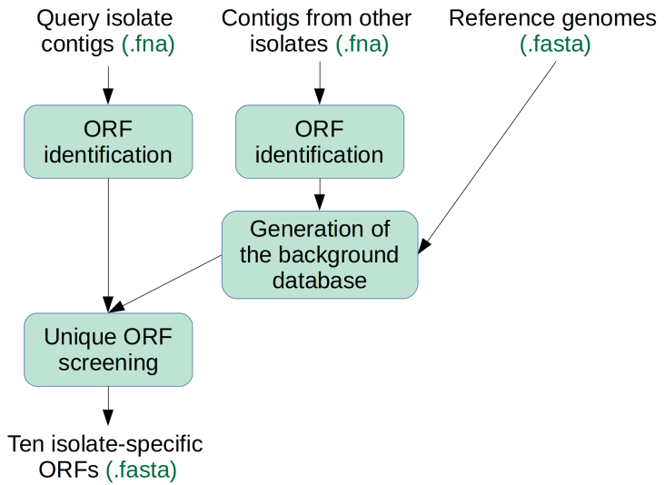

Welcome to the User Manual for Tool 4
This Tool is part of a suite of genome analysis tools that explore bacterial genomes. The suite includes:
| Application | Description |
|---|---|
| The Core | Genome assembly, taxonomic classification, phylogeny, annotation and mass screening. |
| Tool 1 | Mass screening with curated databases. |
| Tool 2 | Mass screening with genes you choose. |
| Tool 3 | Comparison of genomes, and phylogeny. |
| Tool 4 | Primer design: identification of unique stretches of DNA. |
They are built with the pipeline manager Nextflow, and operate within Singularity containers.
The suite was developed as part of a collaborative project between Volac International Ltd. and Cardiff University, partly funded by Innovate UK as part of a knowledge transfer partnership (KTP).
What is Tool 4 for?
Tool 4 identifies stretches of genome that are unique to a particular isolate. The stretches are not found in any reference genome nor any genome of the other isolates submitted to the same run. These isolate-specific sequences can then be used for isolate-specific primer design.
What does Tool 4 do?
Tool 4 operates by first identifying open reading frames (ORFs) in the query genome, then in a substractive step any ORFs with significant identity to a background database are removed, and finally the 10 longest ORFs are published.

The background database consists of the ORFs of all other isolates submitted to the same run, as well as a comprehensive library of lactic acid bacteria genomes.
The reference library comprises genomes downloaded from the RefSeq database; genome assemblies with the highest specifications are included. The reference genome database is generated by maxThree_tool4.py. Information about the reference library and it's maintenance can be found here.